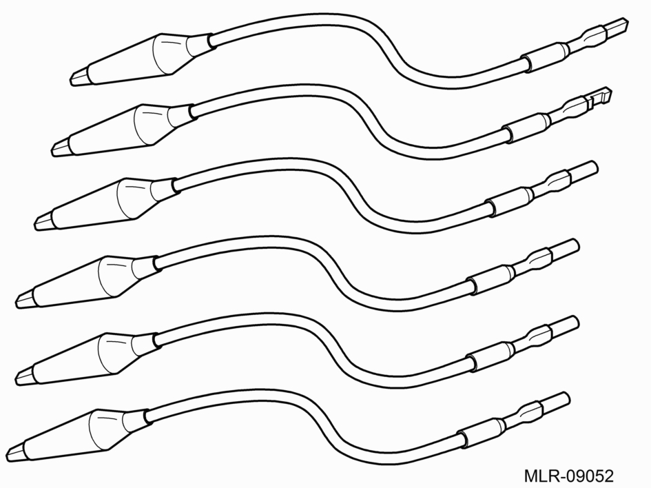
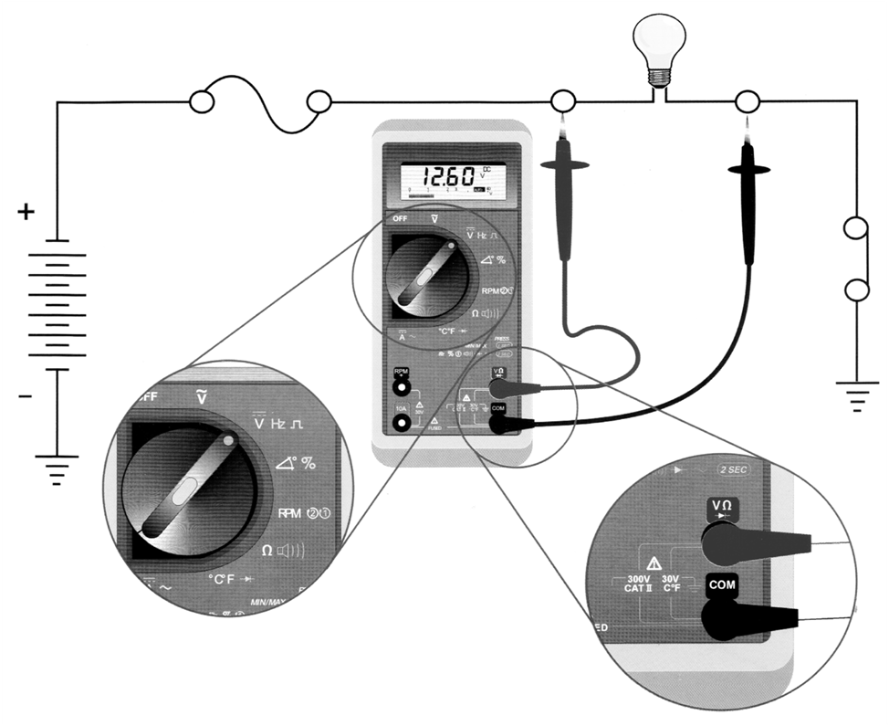
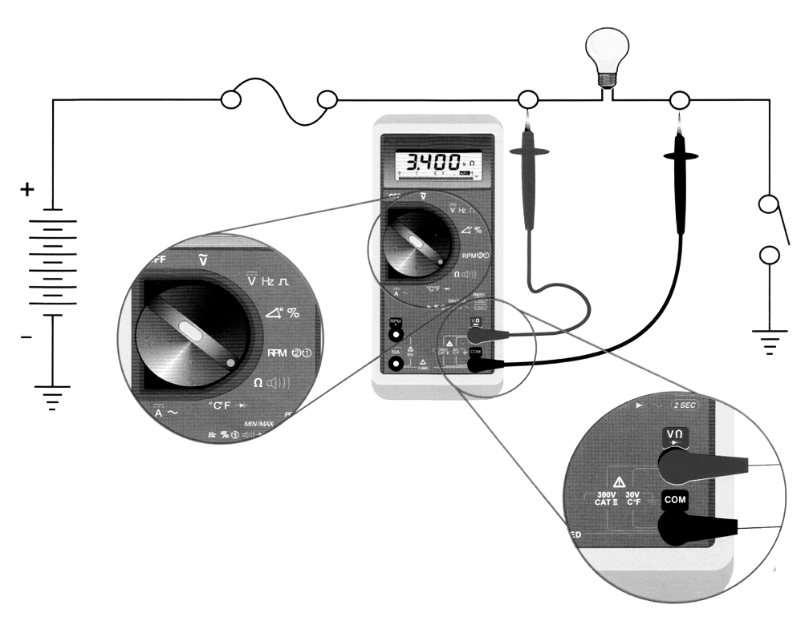
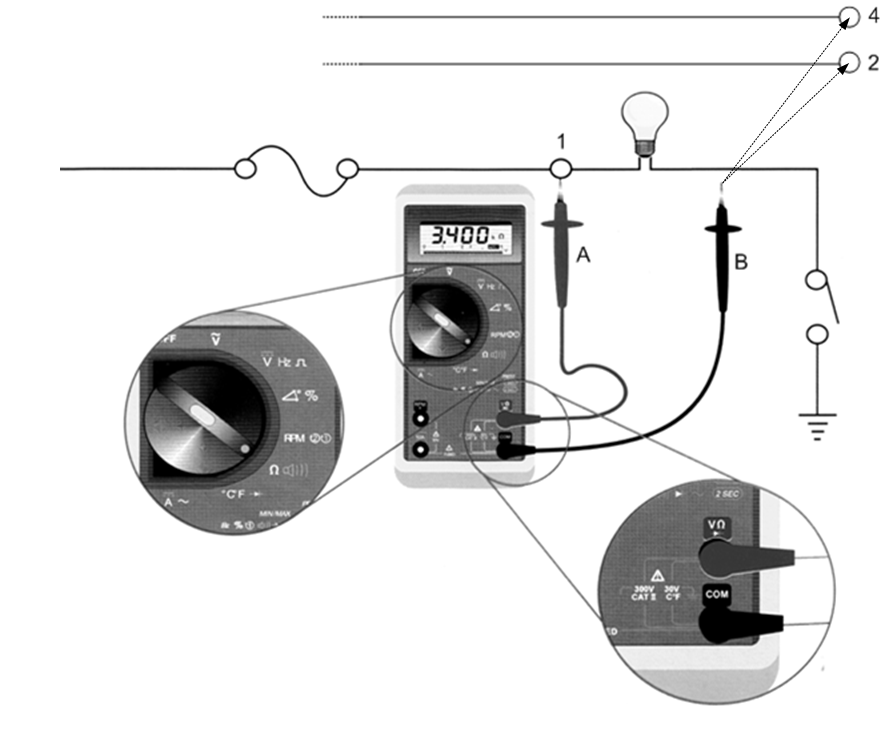
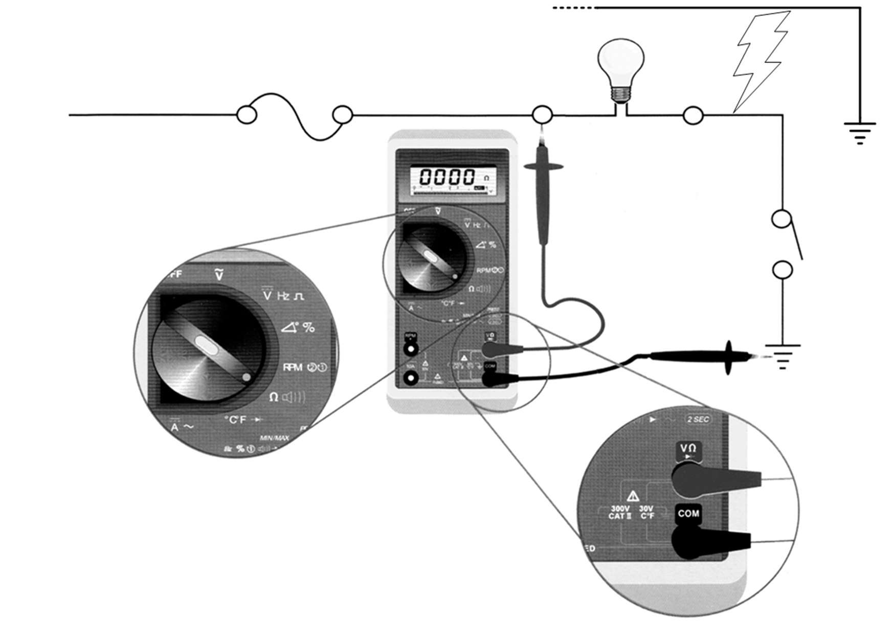
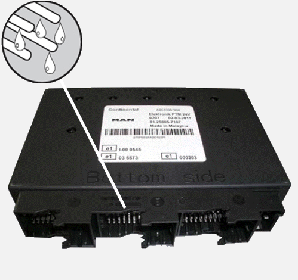
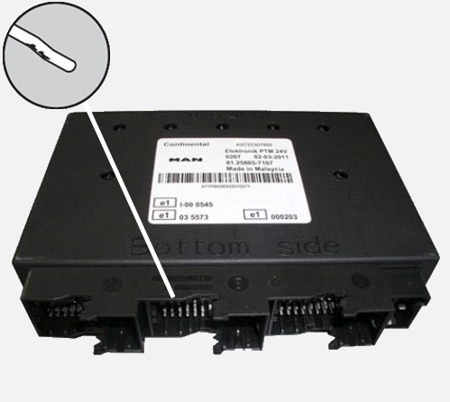
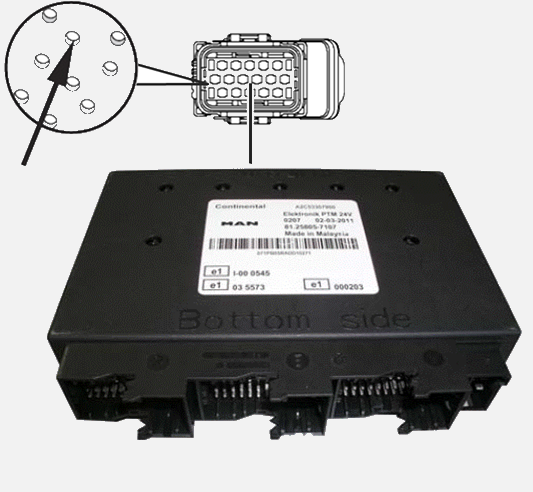
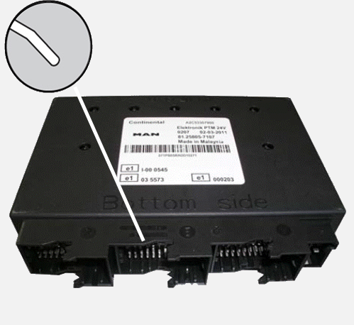

Especificações mínimas do multímetro Tensão DC = 500 mV a 600 V Tensão AC = 5 V a 600 V Corrente DC = 320
micro A até 10 A Corrente AC = 320 micro A até 10 A Resistência Ohm = 320
micro A até 32 Mega Ohm Teste de diodo continuidade audível Temperatura
(sensor termopar)
Uso de pontas de provas especiais
 Para reduzir a possibilidade de danos aos pinos e ao chicote, use as pontas de este do kit de ferramenta VCO-950 ao efetuar a medição.
Como medir corrente
Abra o circuito no ponto em que a corrente deve ser medida. Selecione
a função de corrente CA(A~) ou CC (A-) no medidor, Coloque as pontas de prova do medidor entre as extremidades do
circuito aberto para medir a amperagem e leia a medição
exibida.
Como medir tensão
Selecione a função de tensão CA (V~) ou CC (V-) no medidor. Encoste a ponta de prova positiva (+) do
multímetro em um terminal e a ponta negativa em outro terminal, em seguida leia a medição exibida.  Como medir resistência
Selecione a função resistência no medidor. Certifique-se de que não haja tensão nos componentes sendo testados. Desconecte ambas as extremidades do circuito ou do componente a ser medido. Encoste uma das pontas de prova em um terminal do circuito e a outra ponta no outro terminal, em seguida leia a medição exibida. 
Como medir isolação Este teste tem a finalidade de identificar se um fio está encostando em outro fio do chicote elétrico (fios descascados, derretidos), gerando um resultado indesejado. Selecione a função de continuidade no medidor (normalmente marcada com um símbolo de diodo). Certifique-se de que não exista tensão aplicada no componente sendo testado. Desconecte ambas extremidades do circuito ou do componente a ser medido. Conforme desenho abaixo, encostar a ponta de prova (A) no ponto (1) do circuito, e a ponta de prova (B) deverá se mover para os pontos (2) e (4). Se houver um curto no circuito do componente,
o medidor emitirá o "beep" ou haverá um valor de resistência no display do medidor.
 Como fazer o teste de continuidade
Selecione a função de continuidade no medidor (normalmente marcada com
um símbolo de diodo). Certifique-se de que não exista tensão aplicada no
componente sendo testado. Desconecte ambas extremidades do circuito ou do
componente a ser medido. Encoste uma ponta de prova em uma extremidade do
circuito ou no outro terminal do componente. Leia a medição exibida. Se
houver um circuito aberto, o medidor não emitirá o "beep" ou indicará resistência infinita no display do medidor.
Curto circuito com o massa: É uma condição em que existe uma conexão
indevida de um circuito com o massa, isso ocorre quando, por exemplo, o fio tem contato com o chassi do veículo (massa).
O procedimento para verificação
de um curto circuito com a massa é o seguinte: 1- Desligar a chave de ignição e os terminais da bateria. 2- Deixar o circuito aberto (desconectado). 4- Ajustar o multímetro para medição de
resistência. 5- Encostar uma das pontas de prova do
multímetro no pino correto a ser testado, e encostar a
outra ponta de prova do multímetro na carcaça da cabina.
 Verificação dos pinos dos conectores
Ao desconectar os conectores durante o diagnóstico de falhas, os pinos
devem ser sempre inspecionados para se certificar que estes não sejam a causa
de uma conexão incorreta. Você deve verificar se existem pinos tortos,
corroídos ou torcidos para trás, bem como se faltam vedações ou se estas
estão danificadas.
Umidade no conector:
A umidade em um conector também pode ser a causa de problemas de
performance do sistema. Muitas vezes torna-se difícil inspecionar um conector
quanto à presença de umidade. No caso de suspeita de umidade, o conector deve
ser secado com a aplicação de um limpador de contatos. Também pode ser usado
um soprador de ar quente ajustado em baixo calor para não danificar o
componente ou os fios.

Pinos
corroídos: Inspecione ambos terminais,
macho e fêmea quanto a corrosão, a qual poderá provocar uma conexão elétrica
deficiente dentro do conector. Se houver pinos corroídos, estes deverão ser
substituídos. Consulte a seção de reparos para o conector específico.

Pinos
empurrados para trás (afundados):
Inspecione ambos os terminais, macho e fêmea quanto a existência de
pinos que não possam estabelecer contato por estarem empurrados para trás (afundados) no
conector.
Para efetuar o reparo, empurre o pino
no corpo do conector pela parte traseira deste. Certifique-se de que este
fique travado no lugar. Substitua o pino se não houver travamento. Consulte a seção de reparos para o
conector específico. 
Inspecione
os terminais macho do conector. Se qualquer terminal estiver torto ou
expandido de forma a não encaixar facilmente com o outro lado do conector, o
pino deverá ser substituído. Consulte a seção de reparos para
o conector específico.

Programa de detecção de falhas
O seguinte programa de detecção de falhas, abrange as falhas que podem
ser reconhecidas pela memória de diagnose. A
sequência dos testes corresponde à sequência numérica dos códigos de
diagnose (SPNs), independentemente da importância da falha.
No teste de entrada de um veículo, a memória de diagnose sempre deve
ser lida completamente e todas as falhas armazenadas devem ser
documentadas.
Isto é importante por que durante a detecção de falhas no sistema,
cabos e componentes precisam ser desconectados, o que pode causar a
emissão e o armazenamento de correspondentes mensagens de falha. Por
este
motivo, a memória de
diagnose deve ser apagada sempre após verificações intermediárias. A
substituição em garantia dos módulos de controle só pode ser efetuada
após
consulta à Assistência Técnica da MAN Latin America.
Após a eliminação da falha e um controle, repetir o teste e apagar a
memória de diagnose.
A memória de diagnose sempre deve ser apagada por meio de MCO-08.
Por
princípio, antes de qualquer substituição de componentes ou módulos de
controle, a memória de diagnose deve ser apagada e a falha deve ser
observada.
Por princípio, nos casos de múltiplos registros de falha, primeiro deve
ser
considerado os correspondentes avisos de testes que não requerem a
substituição de componentes ou módulos de controle. Antes de qualquer
reparo ou
substituição de componentes ou módulos de controle, a ignição deve ser
desligada. Se a ignição não for desligada, ocorrerão registros
de falhas nas memórias de diagnose (SPNs) nos diferentes módulos
eletrônicos de
controle.
|
||||||||||||||||||||||||||